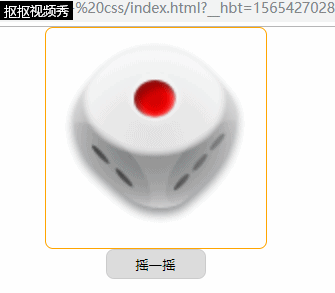

<!DOCTYPE html>
<html lang="en">
<head>
<title>动态图片切换</title>
<meta charset="UTF-8">
<link href="css/style.css" rel="stylesheet">
</head>
<body>
<!-- 游戏区域 -->
<div id="container">
<img src="images/dice_1.png" id="dice" alt="">
</div>
<div id="command">
<input id="btn" type="button" value="摇一摇">
</div>
</body>
</html>
<script src="../../../Day12/code/public.js"></script><!--引用js数据库，调用函数-->
<script type="text/javascript">
//获取所需元素
var btn = document.getElementById("btn");
var img = document.getElementById("dice");
//给btn一个点击事件
btn.onclick = function(){
//切换img的src为动画图片
img.src = "images/diceDynamic.gif";
//隔一个随机时间毫秒数后，得到随机数
var randTime = getRand(500,1000);//调用getRand（）函数
setTimeout(function(){
//1-6的随机数
var rand = getRand(1,6)
//切换img的src为随机的1-6的图片
img.src = "images/dice_" + rand + ".png";
},randTime);
}
</script>
运行后效果：
图片和css样式已分别上传至相册和文件。